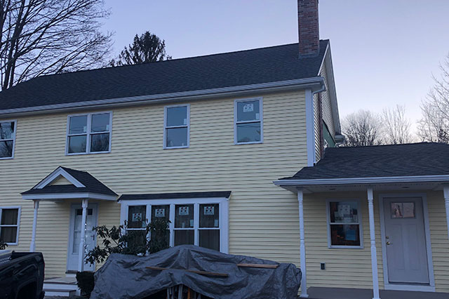
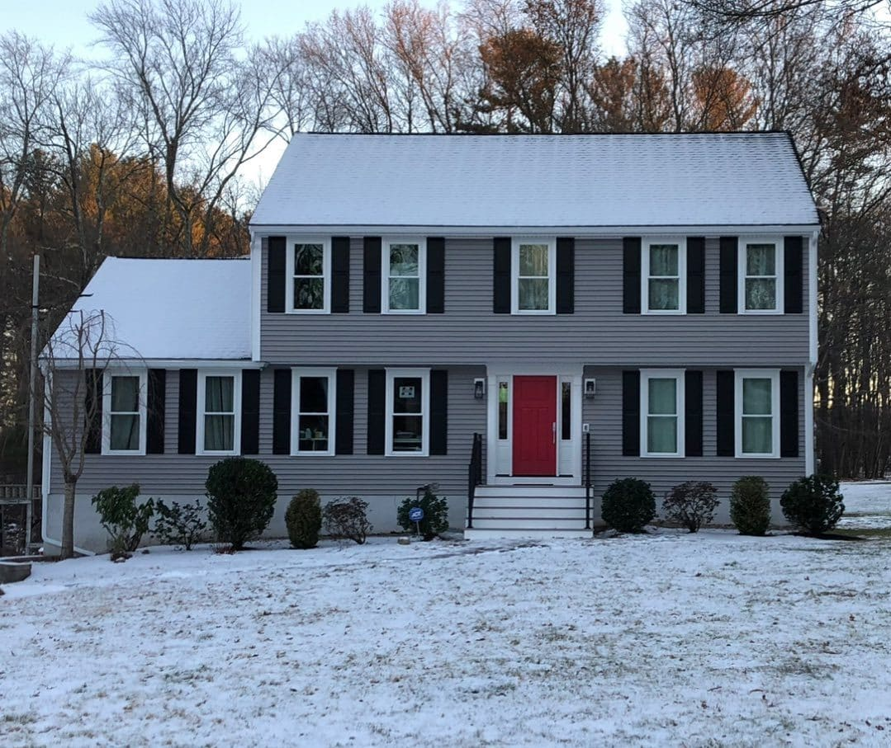

Roofing
Architectural shingle roofs installed and flashed correctly — the first line of defense for your home.
Roofing done right
Your roof protects every dollar you have ever put into your home. We install architectural asphalt shingle roofs, handle tear-offs, and correct the flashing and ventilation details that cheaper jobs skip.
Proper underlayment, ice-and-water shield, and ventilation are not optional in New England — they are why a Murray roof lasts.
What’s included
Shingle roofing
Architectural asphalt shingles in a range of colors.
Ice & water shield
Critical protection at eaves and valleys.
Ventilation
Ridge and soffit venting that prevents ice dams.
Flashing
Chimney, wall, and valley flashing done right.
Gutters
Seamless gutters and proper drainage.
Tear-offs
Full tear-offs down to clean, sound decking.
A look at the craft


From idea to handover
Consult
We visit your home, listen to your goals, and provide a free estimate.
Design
We plan every detail with experienced kitchen and home designers.
Build
Craftsmanship on-site and on schedule, with the owner involved throughout.
Reveal
We hand back a home that fits your life — and is built to last.
Frequently asked
How do I know if I need a new roof?+
Curling shingles, granules in the gutters, or leaks are common signs. We’ll inspect and give you an honest assessment.
Do you address ice dams?+
Yes — proper ventilation, insulation, and ice-and-water shield are how we prevent them in the first place.
How long does a roof take?+
Most homes are torn off and re-roofed in a day or two, weather permitting.
Ready to start your roofing?
Tell us what you have in mind and we’ll get back to you with a no-obligation estimate.